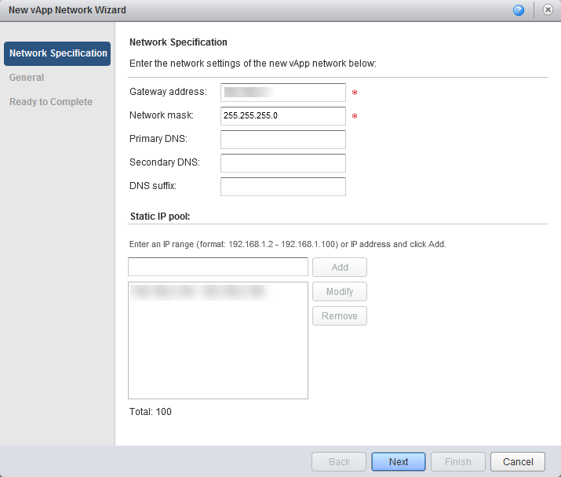
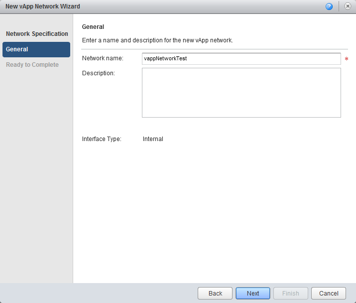
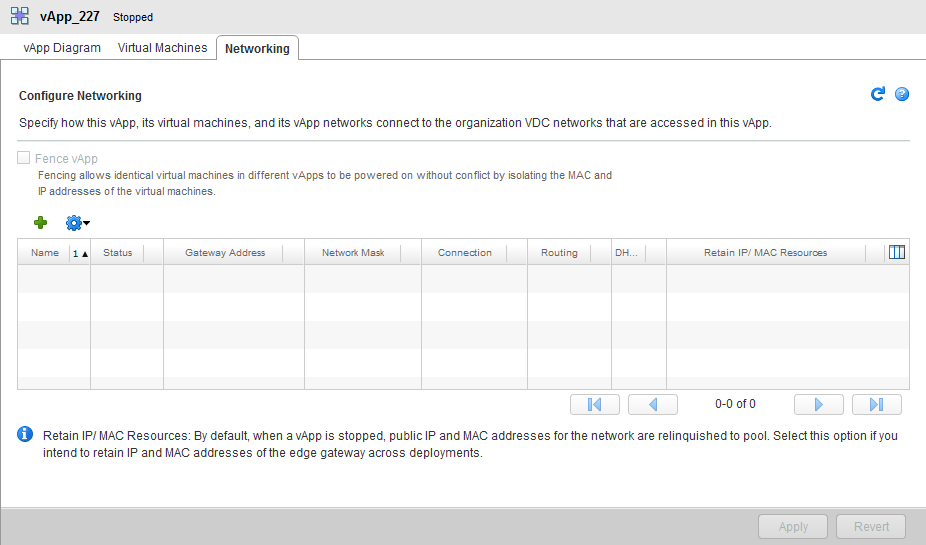
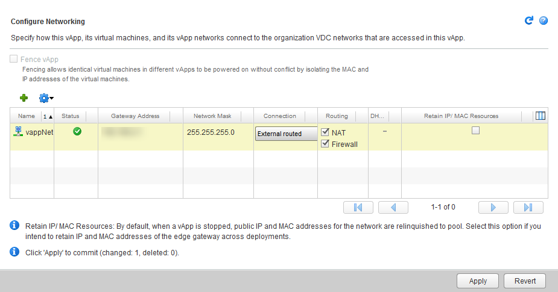
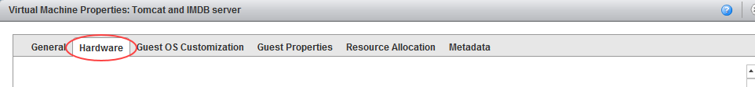
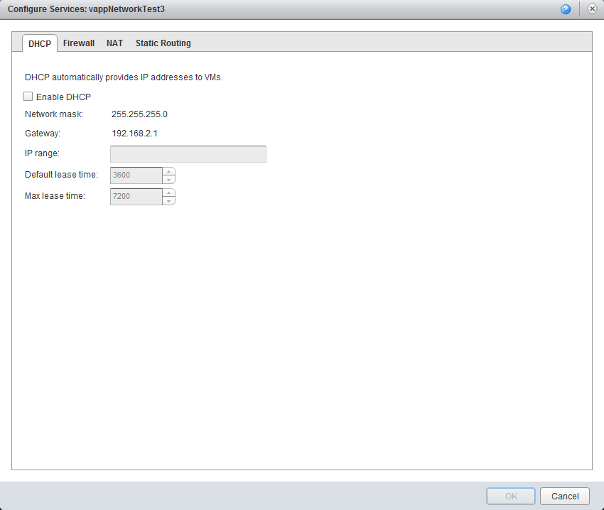
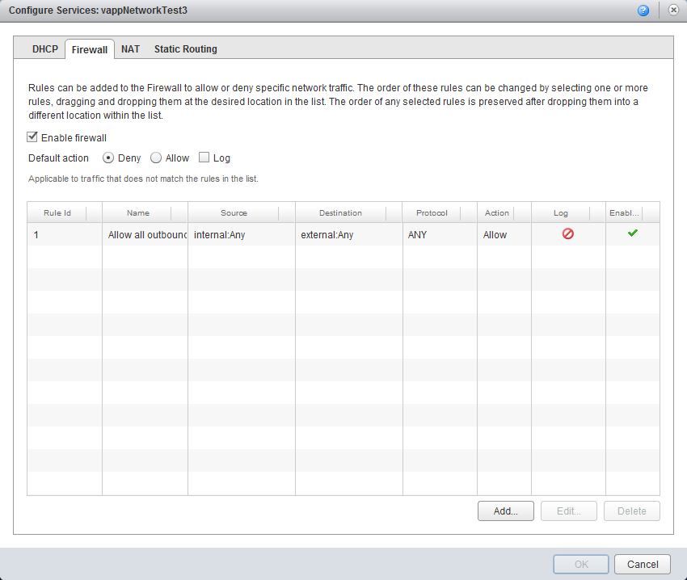
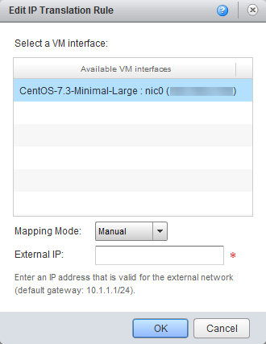
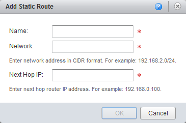
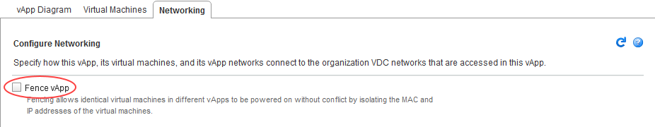

How to create a vApp network
Overview
In addition to virtual data centre (VDC) networking, you can create individual vApp networks to have even greater control over your network infrastructure.
vApp networks enable you to create smaller networks within individual vApps that have a vApp edge, similar to the edge gateway on your VDC. Although a vApp edge isn't as feature rich as a VDC edge, it enables you to create firewall and NAT rules to separate your VDC networks from your vApp virtual machines (VMs). This means you can create some quite complex networks to satisfy application needs.
The example of a vApp network, below, shows the vApp edge.

Note
You cannot create vApp networks in the new vCloud Director 9.1 tenant portal. If your environment uses vCloud Director 9.1, you must first switch to the vCloud Director web console. For more information, see How to switch to the vCloud Director web console from the tenant portal.
Creating a vApp network
There are two ways to create a vApp network within vCloud Director:
Creating a vApp network during vApp creation
Follow the steps for creating a new vApp as shown in How to create a vApp.
When you get to the Configure Virtual Machines page, where you select the network you want your VMs to connect to, from the Network list, select Add Network.
Tip
The Add Network option is at the bottom of the Network list, so you may have to scroll down the list to find it.

On the Network Specification page of the New vApp Network Wizard, fill out the fields as required for your network then click Next.
Some options are pre-populated by default; you can change them if you want.

On the General page, enter a Network name and Description, then click Next and Finish.
Your newly created vApp network is now included in the Network list.

Your newly created vApp network is now included in the Network list.

If you want to connect multiple VMs within the vApp to the new vApp network, go through and make sure they will all connect to it. When you're done, click Next.
On the Configure Networking page, to connect the vApp network to an external VDC network, from the Connection list, select the VDC network that you want to connect to.
In the Routing column, select whether to apply NAT and Firewall rules to the vApp edge (you can always change this later), then click Next.

On the Ready to Complete page, review your configuration, then click Finish to deploy the vApp.
Creating a vApp network after vApp creation
If you've created a vApp that is connected to a VDC network, and now you want to convert it to a vApp with an internal network:
On the My Cloud tab, double-click the vApp to open it.
As you're going to be changing network settings, all VMs within the vApp must be powered off, so, if necessary, on the Virtual Machines tab, right-click each VM and select Power Off.

Select the Networking tab.

Click the green + icon to add a new network.

On the Network Type page of the New vApp Network Wizard, select vApp network then click Next.

On the Network Specification page of the New vApp Network Wizard, fill out the fields as required for your network then click Next.
Some options are pre-populated by default; you can change them if you want.

On the General page, enter a Network name and Description, then click Next and Finish.
Your newly created vApp network is now included in the Network list.

To connect the vApp network to an external VDC network, from the Connection list, select the VDC network that you want to connect to.
In the Routing column, select whether to apply NAT and Firewall rules to the vApp edge (you can always change this later), then click Next.

When you're done, click Apply at the bottom of the page.

If your vApp is already populated with VMs that are connected to a VDC network, you may want to move them over to the vApp network.
To change the network a VM connects to, on the vApp Diagram tab, right-click the VM and select Properties.
In the Virtual Machine Properties dialog box, select the Hardware tab.

In the NICs section, from the Networks list, select the vApp network to connect the VM to.

If you want to dual-home your VM, click the Add button to add a second network.
When you're done, click OK.
You can go back to the VM properties to see the new IP address assigned to the VM.
Viewing and adjusting vApp network settings
When you've created your vApp network and assigned VMs to it, you may want to review the vApp network settings and adjust them if needed.
On the My Cloud tab, open the vApp you want to work with then select the Networking tab.
Right-click the vApp network and select Configure Services.

You can now view the default network services and change them if necessary.
Enabling DHCP
DHCP isn't enabled by default. To enable it, on the DHCP page of the Configure Services dialog box, select the Enable DHCP check box, enter appropriate information then click OK.

For more information about DHCP, see How to create a DHCP pool.
Creating firewall rules
There will be a rule in place to allow any traffic to traverse the firewall. You can amend or delete this rule, or create new rules.

On the Firewall page of the Configure Services dialog box, select the rule you want to edit, then click Edit
For more about firewall rules, see How to create firewall rules.
Creating NAT rules
NAT rules, enabled by default, enable mapping between internal VM interfaces and external IP addresses. To edit the mapping rules for a VM:
On the NAT page of the Configure Services dialog box, select the rule you want to edit and click Edit.

In the Edit IP Translation Rule dialog box, select the VM interface for which you want to edit the NAT rule.
From the Mapping Mode list, select the mapping mode.
The default mapping is Automatic. You can change this to Manual, in which case, enter an External IP address to which the VM can map.
When you're done, click OK.
The external IP address will be on the same subnet as the VDC network that connects to the vApp Edge.

For more information about NAT rules, see How to create NAT rules.
Creating static routes
Static routing at the vApp network level allows traffic to route between different vApp networks, across the VDC networks.
The prerequisites for static routing are as follows:
Static routing must be enabled for the VDC network you're connecting to (see How to create a static route).
The two vApp networks must be routed to the same VDC network.
The vApp networks must be in vApps that have been started at least once.
To add a static route:
On the Static Routing page of the Configure Services dialog box, click Add
In the Add Static Route dialog box, enter a Name for the static route.
Enter the following details:
Network - The address of the first vApp network to which you're adding a static route
Next Hop IP - The external IP address of that vApp network's router

When you're done, click OK.
Repeat for the second vApp network.
The tables below provides examples of the settings needed to create a static route between two vApps.
Network Information
| Network name | Network specification | Router external IP address |
|---|---|---|
| vApp network 1 | 192.168.1.0/24 |
192.168.0.100 |
| vApp network 2 | 192.168.2.0/24 |
192.168.0.101 |
| VDC network shared | 192.168.0.0/24 |
N/A |
Static routing settings
| Static route to network | Route name | Network | Next hop IP address |
|---|---|---|---|
| vApp network 1 | To-vapp1 | 192.168.1.0/24 |
192.168.0.100 |
| vApp network 2 | To-vapp2 | 192.168.2.0/24 |
192.168.0.101 |
Note
Make sure your firewall rules allow traffic on the static routes.
vApp fencing
Fencing a vApp allows identical VMs within different vApps to be powered on without conflict, by isolating the MAC and IP addresses of the VMs. This feature is particularly useful if you are copying vApps or creating catalog images of vApps where these details can't be altered.
vApp fencing can be done during or after vApp creation. It is done when the VMs within the vApp sit on the VDC network, rather than on their own vApp network.
To apply vApp fencing during vApp creation, select the Fence vApp check box on the Configure Networking page of the New vApp wizard.

If you're converting a vApp after creation, on the My Cloud tab, open the vApp you want to fence, then, on the Networking tab, select the Fence vApp checkbox. Make sure you click Apply when you're done to save any changes.

Feedback
If you find an issue with this article, click Improve this Doc to suggest a change. If you have an idea for how we could improve any of our services, visit the Ideas section of the UKCloud Community.